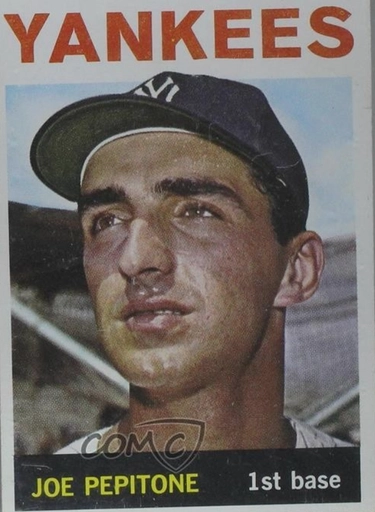

Joe Pepitone "Pepi"
Career Highlights & Facts
(Facts are AI-generated and may require verification)
- Became the 2nd player in league history to hit 2 home runs in a single inning during a rookie season.
- Credited with being the 1st professional ballplayer to bring a hair dryer into the clubhouse.
- Recorded 7 career grand slams while playing multiple defensive positions including all 3 outfield spots.
Would you like to find out more about Joe Pepitone?
Player Biography
Joe Pepitone June 13, 2018 / in BioProject - Person 1960s All-Stars / by admin This article was written by David Krell If Joe Pepitone were a car, he’d be a Ferrari — powerful, Italian, and high-performance. Though his career .258 batting average may not evidence power, Pepitone placed in the American League’s top 10 in total bases twice, in RBI twice, and in home runs thrice in his 12-year major-league career (1962-1973). He also clouted seven grand slams. Defensively, Pepitone showed merit at first base in the junior circuit with a top-10 ranking four times for putouts, four times for assists, and four times for double plays. He also occupied the number-one slot in fielding percentage three times; in addition to first base, he played all three outfield positions. But it is Pepitone’s off-the-field exploits that often grab more attention. For a Yankee in the 1960s, New York City was a playground of nightclubs, saloons, and crash pads; Pepitone soaked it up like a sponge with teammates, mobsters, and women. There was no shortage of companions — sexual and otherwise — to populate Pepitone’s orbit. Few New Yorkers are blunter than Joseph Anthony Pepitone, born on October 9, 1940, to Willie and Angelina Pepitone in Brooklyn. Joe grew up with two younger brothers, Jimmy (sometimes called Vincent) and Billy. Jimmy lived with an aunt a block away, beginning when he was 4½; the living arrangement lasted for eight years. Because the aunt was childless, the Pepitones entrusted Jimmy to her. 1 Decades before gentrification began in the 1990s, the Pepitones lived in Brooklyn’s Park Slope neighborhood. Though abused by his father, Pepitone idolized him in this “semislum that was populated almost entirely by Italian and Irish hard-noses. He had a furious temper and, when he wasn’t spoiling the shit out of me, he was beating the shit out of me.” 2 A maternal uncle nicknamed Red began Pepitone’s interest in baseball. But the lessons could be brutal. “He started catching with me when I was seven or eight. As I got older, nine or ten, he’d throw harder and get angry when I missed one. If I missed easy ones, he’d smack me, and Willie smacked him,” said Pepitone. 3 Willie’s abuse stopped after a scary incident involving a “thick glass ashtray.” It began when a scout told Willie that criticizing his son affected performance. Angered, he fired the scout, which prompted Pepitone to scream, “I hate you!” Willie hurled the ashtray; it hit a closet door, and “smashed into a hundred pieces, and a dozen shards richocheted sic into my eyes and face. I had searing pains in my eyes and I couldn’t open them. I thought I was blind, and I could feel the blood running down my face and dripping off my clothes.” 4 The incident shocked Willie; no more would he physically abuse his son. If he got angry, he “put his hand through a wall, a window, whatever was there when he blew up.” 5 But it was Willie’s voice that had a lasting impact on Pepitone: “He couldn’t stop yelling at me any more than he could stop beating me all those years. I knew he didn’t mean it, that all he wanted was for me to do well. But the yelling really got to me because it stuck with me longer than a punch, the words crouching in my head and repeating themselves, the things he called me.” 6 A star at Manual Training High School (since renamed John Jay High), Pepitone played on the Nathan’s Famous Hot Dogs semipro team with players in their early 20s; his batting average was .390. 7 In his senior year, Pepitone got shot in a school hallway in March 1958, when a classmate fooled around with a .38 revolver near Pepitone’s locker. What might have begun as a joke, or even a taunt, could have ended in death — the bullet went through his body after hitting a rib and “missing three vital organs by inches.” 8 It was dumb luck that saved him. “The kid was one of those wild ones you read about,” explained Joe in 1962. “He found this rusty gun on the docks and brought it to school. We were just finishing out sic last class, in office machines, and I was getting my coat. “He stuck the gun in my stomach and barked, ‘Hands up.’ I was so frightened, I backed right into the clothes closet. The next thing I knew he had pulled the trigger. I didn’t feel a thing. I looked at my stomach and saw a hole. There was no blood. That’s all I remembered until after the operation.” 9 The incident happened a few days after Willie had a heart attack; on Good Friday, the elder Pepitone died. 10 On August 13, 1958, Pepitone agreed to play for the Auburn Yankees of the Class D New York-Pennsylvania League, seeing action in 16 games and batting .321. His signing bonus was $25,000. 11 The New York Daily News praised Auburn’s newest outfielder and first baseman as an “outstanding Brooklyn baseball prospect.” 12 In the offseason Pepitone played in the Florida Winter Instructional League. Passion earned him respect from his manager, Steve Souchock : “I’m delighted with young Pepitone. He came here with no pro experience. We signed him right out of Brooklyn’s Manual High School, but the boy loves to play ball and has shown surprising power.” 13 With the Fargo-Moorhead Twins in the Class C Northern League in 1959, Pepitone compiled notable statistics: 123 games, .283 batting average, 35 doubles, 12 triples, 14 home runs, 87 RBIs. In 1960 he jumped to Class A ball — the Binghamton Triplets in the Eastern League. Described by Binghamton sportswriter John Lake as “darkly handsome,” Pepitone stood tall at 6-feet-2 and weighed 178 pounds. 14 Once boasting a head of curly hair, he conformed to baseball’s shorter — sometimes shorn — style, but not voluntarily. After Pepitone refused a mandate to get a haircut, Souchock took matters into his own hands — and clippers — to ensure Pepitone’s shorter locks. 15 Pepitone batted .260 in Binghamton, then found himself in an Amarillo Gold Sox uniform in 1961. He tore up the Lone Star state, batting .316 with 87 RBIs, 24 doubles, and 21 home runs. Amarillo had an outstanding lineup — six of its full-time players hit .300 or better. 16 One of seven unanimous selections from the Texas League’s six skippers, Pepitone earned a place on the Texas League All-Star team. 17 Next stop: spring training with the 1962 Yankees, atop the baseball world after an iconic season in 1961 featuring Roger Maris and Mickey Mantle galloping toward Babe Ruth ’s single-season record of 60 home runs. Maris crashed it on the last game of the newly created 162-game schedule with his 61st home run ; an injury sidelined Mantle in September, stopping his tally at 54. The Yankees won the American League pennant, beat the Cincinnati Reds in the ’61 World Series, and began 1962 by winning 13 of their first 20 games, including a seven-game winning streak. Pepitone made the cut for the 1962 Yankees. In his rookie season, he batted .239 and played in 63 games. Two of his seven home runs came during the explosive eighth inning of a 13-7 victory against the Kansas City A’s on May 23; the Yankees pounded A’s pitchers Dan Pfister , Diego Segui , Bob Grim , and John Wyatt for nine runs. Up to that time, the major leagues had recorded 14 players hitting two home runs in one inning; Joe DiMaggio was the only other Yankee on that list. Like Pepitone, he did it in his rookie season. 18 The following day, Pepitone added three RBIs in a 9-4 thrashing of the A’s; he totaled 17 RBIs for the season. 19 It was revealed that the Yankees knew about Pepitone when he was 14. Veteran scout Bill Skiff admitted, “You could see the great natural talent he had even then — the quick wrists, the arm, his terrific instinct in the outfield. Actually, we thought he would make it quicker than he did.” 20 Pepitone spent part of the 1962 season in the minors; an ill-fated attempt to outsmart Ralph Houk about nighttime activities was the last straw. During a June road trip, Pepitone readied himself to skedaddle for satiety at 1:30 A.M. when Houk and Yankees GM Roy Hamey came out of the elevator as Pepitone headed in. A lame excuse about looking for roommate Phil Linz had as much chance as convincing Houk and Hamey as the Dodgers had of moving back to Brooklyn. They found Linz in bed, there since midnight. 21 Shipped to the Triple-A Richmond Virginians, Pepitone played in 46 games, notched 27 RBIs, and hit .315. The Yankees won the 1962 World Series against the San Francisco Giants in seven games. But Pepitone did not play. Less than a week after Thanksgiving, Pepitone had Houk’s confidence for the starting first-baseman position because the Yankees traded Moose Skowron to the Dodgers for righty pitcher Stan Williams . Pepitone played in 157 games in 1963, batted .271, smacked 27 home runs, scored 79 times, and knocked in 89 runs. He made headlines for his pugilism in a Yankees-Indians game on August 21. Barry Latman hit Pepitone on the right wrist in the third inning, “sending pain shooting up to my elbow.” In the eighth, Indians hurler Gary Bell zoomed a fastball “behind” Pepitone and his next pitch headed straight for Pepitone’s ribs, like there was a bullseye painted on his jersey. After the ball “nicked” it, Pepitone charged the mound. But umpire John Stevens restrained him and fined Bell $50. On his way to first base, Pepitone screamed at Bell, who encouraged him to fight. Pepitone didn’t get more than “two running steps” toward the pitcher when Indians first baseman Fred Whitfield wrestled him; a bench-clearing brawl ensued, lasting less than 30 seconds. Pepitone was ejected and fined $250. 22 The Yankees won the American League pennant on September 13 in a 2-0 victory over the Minnesota Twins; Pepitone and John Blanchard knocked solo home runs. 23 It was déjà vu all over again as the Yankees met the Dodgers in the World Series for the first time since 1956. The Yankees lost in four straight; Pepitone played in each game, batting .154 for the Series. He got two hits against Sandy Koufax in the first game, a 5-2 loss. Johnny Podres took a shutout into the ninth inning of Game Two before Ron Perranoski relieved him; the Dodgers won 4-1. Pepitone’s two-out, ninth-inning bash off Don Drysdale in Game Three might have tied the game, but Ron Fairly preserved the 1-0 shutout when he caught the 360-foot drive — the longest Yankee hit of the game. 24 The Dodgers completed the sweep with a 2-1 victory in Game Four, Koufax’s second entry in the win column for the Series. Pepitone labeled his fielding responsible for the loss. In the seventh inning, third baseman Clete Boyer fielded a groundball and fired it to Pepitone. “Boyer’s throw was perfect,” said Pepitone. “It was right there. I just lost it in the crowd. All I could see was spots. The ball hit me on the right wrist, then went up my arm and bounced off my chest.” 25 When 1964 began, Pepitone got a 50 percent raise, reportedly signing for $18,000, about $6,000 more than he earned in 1963. Though the import of the World Series error wasn’t as ghastly as Mickey Owen ’s in the 1941 World Series, it stung. By the beginning of ’64, Pepitone said that any bad will had subsided. 26 Playing in all but two games in 1964, Pepitone batted .251, hit 28 home runs, and cracked the century-mark in RBIs with an even 100. The Yankees and Cardinals battled to a seventh game for the 1964 World Series title; St. Louis celebrated, New York mourned. Pepitone hit .154, again. He was crucial in the Yanks’ 8-3 victory in Game Two on October 8 — the day before he turned 24. With the score tied, 1-1 in the top of the sixth, Bob Gibson ’s “soft curve ball” hit Pepitone on the thigh. But which one? New York Post sportswriter Maury Allen wrote, “Each time he showed reporters the spot on his leg, he banged his thigh with his hand and it grew redder and redder. Both legs had the same mark.” 27 Cardinals catcher Tim McCarver claimed that Pepitone fouled the pitch: “A pitch on the thigh doesn’t sound like wood unless he has a wooden leg.” 28 Gibson had worked a 1-and-2 count when Pepitone swung — sort of. Home-plate umpire Bill McKinley judged that Pepitone checked his swing; First-base umpire Ken Burkhart agreed after McKinley consulted him. 29 The hit-by-pitch moved Mantle, who had walked, to second base. Tom Tresh singled home Mantle. After losing the 1964 World Series, the Yankees fired Yogi Berra and replaced him with Cardinals skipper Johnny Keane . Pepitone had a banner day at Tiger Stadium in a July 5 doubleheader — a three-run homer, a double, and a single in the 5-4 second-game loss; the boys from the Bronx won the first game, 7-2. But Pepitone’s performance was not the story. Tigers hurler Joe Sparma fired close-shave pitches to Kubek and Pepitone in the first inning of game two, forcing them to the ground. It was a continuation of bad blood circulating since 1964 between the former Ohio State quarterback and the pinstriped players. 30 Steve Hamilton answered in kind when Sparma stood in the batter’s box, which triggered the untamed Tiger to take “three bold steps in front of the plate, waving the bat as he went.” 31 Kubek tried to defuse the tension by heading toward Hamilton, but Sparma seemingly invited his Yankee counterpart to continue toward him. While the Yankees infield closed ranks, Pepitone sprang like a wound-up toy from right field with a laser-like focus on Sparma; the Yankee bench emptied to prevent a disaster. Phil Linz was ejected for cursing at umpire Cal Drummond .” 32 Tigers fans responded to the brawl by hurling things on to the field, including firecrackers. Pepitone’s carelessness — or ignorance — regarding Keane’s mandate for 5:00 P.M. batting practice on July 16 resulted in a benching and a fine reported to be $100. The benching lasted one day; Keane put him into the lineup the next day against the Senators, though Pepitone had been 0-for-his-last-12. The Yanks had a stupendous ninth-inning rally; Pepitone singled home Tony Kubek to win the game, 5-4. It boosted the slugger’s spirits. “I feel great again,” declared Pepitone. “I’ve been upset and said a lot of things I shouldn’t have. But I had a talk with Johnny and Ralph [Houk] today, and everything’s fine. All I want to do is help.” 33 When Pepitone and Ross Moschitto got to the ballpark late for a mid-August doubleheader against the A’s — 11:15 A.M. required arrival time, 12:25 P.M. actual arrival time — Keane tagged them each for a $100 fine. They claimed, to no avail, that they overslept. 34 Pepitone’s refocusing that he promised before the season did not result in a higher batting average for 1965 — .247 — but he drew 19 more walks in 67 fewer plate appearances. The Yankees signed Pepitone for $25,000 in 1966, the same salary as he had in 1965; 35 he batted .255 in a subpar 70-89 year for the Bronx. But an off-the-field pursuit revisited old emotional and physical wounds. Seeking justice for the 1958 shooting, Pepitone had sued the New York City Board of Education for $100,000. He wanted $75,000; Angelina, his mother, $25,000 because of medical expenses and the loss of her son’s “services,” claiming that bonus offers up to $60,000 decelerated to $25,000 with the Yankees, and the Board’s “carelessness and negligence” allowed the pistol on school grounds. 36 The State Supreme Court okayed a trial to take place after the season. The all-male jury gave a unanimous verdict against Pepitone. For 1967, he batted .251 in 133 games. When 1968 began, Pepitone’s salary was $30,000, the same as for 1967. 37 It was a similar season in the batter’s box, but much less playing time; Pepitone batted .245 in 108 games. In 1969 he regaled reporters with his haircut, which took an inch off his sizable sideburns, and a voyage to Las Vegas and Hollywood, including a dinner with Frank Sinatra. 38 On April 11, he notched four hits — including a home run — three RBIs, and two stolen bases in a 9-4 victory over the World Series champion Tigers. During the dog days of August, Pepitone didn’t show up for a game against the Twins; the Yankees routed the Minnesota men 10-3 on August 12, thanks largely to an eight-run tally in the seventh inning. Houk said he knew Pepitone had “personal problems,” but there was no sign that the veteran Yankee would be a no-show. 39 Pepitone got Houk’s approval to skip the next game, which the Twins won, 5-2. 40 Two weeks later, the Yankees suspended Pepitone and fined him $500 because he left during the middle of a game against the White Sox at Yankee Stadium without getting a green light from Houk. It was the fourth game that Pepitone sat out because of back and shoulder problems. Yankees owner Mike Burke attributed Pepitone’s personal issues — back alimony, separation from second wife — as negatively impacting his mood: “But, of late, I’ve noticed a change in his makeup. He has not been effervescent. He seems drained of enthusiasm and desire to play ball.” 41 Spending was a factor, too. Yankees GM Lee MacPhail explained that team “frequently advanced” Pepitone’s considerable salary. 42 Pepitone left the stadium before the August 30 game against the Royals, an expansion team, as a response to the fine. “I didn’t stay Friday night because I didn’t think I should have been fined,” he explained. 43 Before it grew into a tempest, Pepitone made amends with Houk in a 45-minute meeting on September 1. “I was 100 percent wrong in doing what I did,” admitted Pepitone. “I apologized to Ralph and will do the same to the players tomorrow. 44 Regarding his financial and family situation, Pepitone dismissed the theory that they affected his behavior. 45 In the first game after the meeting, Houk used Pepitone as a pinch-hitter in a 5-4 victory against the expansion Seattle Pilots. It was an oh-fer at bat. The fans booed him. 46 Pepitone finished 1969 by leading the team in home runs — 27 — and batting .242. Aside from the disappearances and forced benching from injuries, he played in 135 games. “I respected Houk so much,” said Pepitone in 2018. “He let you know his disappointment if you made an error, swung late, or didn’t run hard. But he never yelled. He’d give a nasty look or tell a coach about your error and make sure that you didn’t do it again.” 47 As New Yorkers began the voyages to stores for holiday shopping, they learned that Pepitone was heading to Houston in a trade for fellow first baseman and outfielder Curt Blefary . Pepitone was synonymous with pinstripes. He fit perfectly with the 1960s and “Fun City” as sportswriter Dick Schaap dubbed New York. That was all gone. A fashion icon among ballplayers of the 1960s, Pepitone is noted for being the first ballplayer to bring a hair dryer into the locker room. Where the Yankees had loose reins on the players, the Astros were stringent. During spring training, for example, a player could get fined $250 for missing curfew. 48 When Pepitone didn’t show up for a “team workout during the All-Star break,” he was fined $250. His reason for being absent was an elbow injury suffered during an Astros-Dodgers game when he was hit by a pitch. 49 On July 21, Pepitone underscored his friction with Houston’s management: “I can’t stand Harry Walker . I can’t stand [Astros general manager] Spec Richardson. I can’t stand all their regulations. I can’t stand a million rules.” 50 And so, he went back to New York. The following day, he affirmed that he would not head to St. Louis for the team’s road trip. The Astros suspended him indefinitely — without pay. 51 A week later, the Cubs picked up Pepitone on waivers for $20,000. It was inevitable. “I’m very happy,” he said. “Everything has worked out just great. Going to a contender is the greatest thing of all. I only hope I can help them.” 52 Cubs skipper Leo Durocher was enthusiastic: “I plan to start him in center field. I’m not at all worried about the problems he has had with any other club. All I know is he’s a helluva player and I think it’s a helluva deal. I’m very pleased and happy.” 53 Pepitone had the best year of his career in 1971, batting .307 in 115 games. The next season, 1972, should have been filled with enthusiasm. It wasn’t. Lack of a salary increase frustrated Pepitone. Tranquilizers did little to calm his nerves. The good will that boosted his spirits evaporated. 54 And so, the colorful slugger headed off the field for good. Or so he thought. By the end of May, Pepitone had met with Cubs general manager John Holland and Durocher and agreed to come back. It was imperative for them to understand if Pepitone’s retirement was more of a hiatus because they wanted to seal a trade for a first baseman. 55 Pepitone finished 1972 with a .262 batting average in 66 games. But he lost a supporter when the Cubs fired Durocher in July and replaced him with Whitey Lockman . Pepitone played 31 games for the Cubs and batted .268 in 1973 before being traded to the Atlanta Braves for rookie Andre Thornton in mid-May. “It’s a shock to me,” revealed Pepitone. “I knew I gave the club a little trouble but I didn’t think it would lead to this. I believe the reason I was traded was the money troubles I’ve had with the team. I don’t believe it was because of my ability. I can do as good a job as any first base man sic .” 56 He played three games for the Braves and went 4-for-11. On May 26, he quit. 57 Lured by a two-year, $70,000 contract with the Tokyo Yakult Atoms, Pepitone went to Japan; the Atoms coveted the 32-year-old and paid the Braves $150,000. 58 A sixth-inning single in his first game knocked home the winning run in a 2-1 victory over the Yomiuri Giants. 59 After 14 games, Pepitone asked for his release; he batted .163.” 60 Toward the end of his 1975 autobiography, Pepitone admitted the heartache that he caused his family by ignoring boundaries of behavior. “I gave them ample reason to be concerned about me, about my self-destructiveness, and I’m sorry about that. Truly sorry that I brought them down so many times. I know now that you can’t fuck over yourself without messing up the people you care about most, and with that knowledge comes the greatest pain of all. You do what you have to do, and you pay the price — but you pay it doubly when you see how it has hurt others you love.” 61 His realization was sincere. His commitment faltered. Pepitone returned to professional baseball in 1976, playing 13 games for the Hawaii Islanders in the AAA Pacific Coast League. He swatted 12 hits, scored five runs, and hit .222. In the early 1980s, George Steinbrenner hired Pepitone to be a coach in the Yankees’ minor-league system. His pupils included Don Mattingly , whom he taught the intricacies of first base. Steinbrenner moved Pepitone to the Bronx in 1985. His notoriety expanded that year when he was busted for drug possession; in 1988, he got a six-month prison sentence. 62 The drug bust mattered little, if anything, to Steinbrenner, who arranged for Pepitone to be in a work-release program during the prison sentence. 63 Pepitone was busted for a DUI when his car hit two cars and the walls of the Queens-Midtown Tunnel in 1995; he spent the night at Long Island Jewish Hospital with “minor injuries.” 64 Three years before, he was arrested for a fight at a Catskills hotel triggered by someone calling him a “washed-up nobody.” 65 Still, Pepitone remains a sturdy figure rather than a scandalous one in the eyes of Yankee fans. Television writers often invoke his name. For example, in The Sopranos first-season episode “Down Neck,” Tony has a flashback to his childhood in 1967 when Uncle Junior picks up Johnny Boy (Tony’s father) and shouts from his car that Pepitone had three RBIs in last night’s game. 66 Pepitone had three games that year where he notched three RBIs — April 16 against the Red Sox (7-6 win), June 2 against the Tigers (9-5 loss), and July 26 against the Twins (6-1 win). His notoriety among the fans stemmed first from his style of play, Pepitone said. “No matter what I did off the field, I gave 100% on the field. That included backing up my teammates during brawls. If there was trouble, I went directly to the middle of it. The fans notice that.” 67 But there were tremendous costs to his lifestyle off the field. Pepitone’s businesses and personal behavior predicated debt — tens of thousands of dollars worth. During his playing days, Pepitone started a bar and a hair salon; both bore his name and went under. The bar’s bottom line cratered when the Chicago PD caught the bar in a crackdown on drug use in the Rush Street area; as the only celebrity owner, he unwillingly dominated the media coverage. “If there were drugs in my bar, I didn’t know about it,” said Pepitone. 68 Beyond his bank account, Pepitone’s sins have not gone unpunished. There have been three marriages — two divorces and a prolonged separation with his third wife. His behavior caused strained relations with his five children — three daughters and two sons. Pushing 80, he found solace through therapy. Where mental health issues were once the stuff of mockery in society, they have revealed a clarity regarding the reasons for his behavior celebrated by the press, fans, and teammates. “I began seeing a psychiatrist and I learned that I’m bipolar,” explained Pepitone. “Then, I rebuilt my relationships with my family. I’m closer with my second and third wives and three of my children. I’ve been in a long-term relationship of 12 years [as of the writing of this article in 2018] with a wonderful woman named Irene Thomas.” 69 Therapy can be a painful process. As he did with physical injuries during his career, Pepitone plays through the pain. Victories come in increments when he recognizes the sources of behavior patterns, for example, using alcohol as a self-medicating tool; Pepitone stopped drinking in 2000. St. Sebastian is the patron saint of athletes. Perhaps he keeps a watchful eye and offers redemption, now and then, on a Catholic boy from Brooklyn by the name of Joseph Anthony Pepitone. Postscript Pepitone died on March 13, 2023, at the age of 82. Acknowledgments This biography was reviewed by Len Levin and fact-checked by Mark Sternman. Notes 1 Joe Pepitone with Berry Stainback, Joe, You Coulda Made Us Proud (Chicago: Playboy Press: 1975), 41. 2 Pepitone with Stainback, 1. 3 Pepitone with Stainback, 32. 4 Pepitone with Stainback, 38. 5 Pepitone with Stainback, 39. 6 Pepitone with Stainback, 40. 7 Pepitone with Stainback, 35. 8 Pepitone with Stainback, 45. 9 “Lucky to Be a Yankee … Luckier to Be Alive,” Associated Press, New York World-Telegram and Sun , February 26, 1962: 23. 10 Pepitone with Stainback, 46-47. 11 Pepitone with Stainback, 48. 12 “Newest Yank,” Daily News (New York), August 14, 1958: 61. 13 Dave Rosenbloom, “Globetrotters Vie in Geneva Tonight,” Rochester Democrat and Chronicle, November 5, 1958: 28. 14 John Lake, “Our Joe P. in Joe D’s Footsteps,” Binghamton (New York) Press and Sun-Bulletin, April 10, 1960: 44. 15 Ibid. 16 Louis Effrat, “Yankees Return to Town With Another Baseball Title but Without Fanfare,” New York Times , October 11, 1961: 57. 17 “Seven Amarillo Players On TL’s All-Star Club,” Odessa (Texas) American , July 9, 1961: 27. 18 Joseph M. Sheehan, “Pepitone’s 2 Clouts Pace 9-Run 8th as Yanks Top Athletics, 13-7; Mets Bow,” New York Times , May 24, 1962: 41. 19 Robert L. Teague, “Yanks Whip Athletics, 9-4, on Pepitone’s Hitting; Mets Bow to Dodgers,” New York Times , May 25, 1962: 37. 20 Ibid. 21 Pepitone with Stainback, 80-81. 22 Ibid., 90-91. 23 John Drebinger, “Yanks Clinch 4th Pennant in a Row; Cards Win as Dodgers Split Twin Bill,” New York Times , September 14, 1963: 30. 24 Bill Becker, “Drysdale Had Visions of Pepitone’s Last-Out Drive Going Into the Seats,” New York Times , October 6, 1963: 199. 25 “Pepitone Casts Himself as ‘Goat,’” New York Times , October 7, 1963: 39. 26 William J. Briordy, “Yanks Give Pepitone $6,000 Raise,” New York Times , January 28, 1964: 38. “The fans haven’t bothered me too much about that error. The people have been very nice and I honestly don’t think about it much any more.” 27 Maury Allen, “Pepitone’s ‘Hit Me’ Blackjacked Cards, New York Post , October 9, 1964: 112. 28 Ibid. Pepitone played through a bruised shoulder from a collision with Lou Brock in Game 1, when the St. Louis speedster laid down a sixth-inning squeeze. Red Foley, “Pepitone Stays in Game Despite Sore Shoulder,” New York Daily News , October 9, 1964: 76. 29 Joe Trimble, “Ump’s Call Helps Break Tie; Mel Spaces 7 Hits,” New York Daily News , October 9, 1964: 76. 30 Joe Falls, “Scrappy Sparma Saves a Split for the Tigers,” Detroit Free Press , July 6, 1965: 33. Jim Bouton got a $50 fine in a 1964 game for throwing at Sparma in retaliation for perceived brushback pitches. “It develops that ball players, like elephants, have memories, and everyone suddenly remembered what happened last year and everyone got mad.” 31 Dick Young, “Yanks, Tigers Split, 7-2, 5-4, as Bombs and Pepi Explode,” New York Daily News , July 6, 1965: 64. “Pepitone was a madman. He tore loose again, spewing angry words at Sparma, who by now was being pushed back to the screen by a few tamer Tigers. Ump Larry Napp threw his arms around Pepitone. Pepi lurched — and stepped on the right foot of Boyer, sending Clete hopping off on one leg, and cussing.” 32 Ibid. 33 Joseph Durso, “Pepitone Is Star,” New York Times , July 18, 1965: S1. 34 “Keane Fines Pepitone, Moschitto $100 Each,” New York Times , August 16, 1965: 31. The Daily News acknowledged the mid-July fine in its story, but stated that it was $50. Joe Trimble, “Yanks Fined,” New York Daily News , August 16, 1965: 45. 35 Joseph Durso, “Yankees Wrap Up Six in $128,000 Package,” New York Times , February 9, 1966: 45. 36 F. David Anderson, “Pepitone’s Suit in Shooting Set,” New York Times , September 24, 1966: 25. 37 “Playful Pepitone Avoids a Salary Cut,” New York Times , February 15, 1968: 53. 38 George Vecsey, “Pepitone Gives an Inch — Of Sideburns,” New York Times , March 1, 1969: 39. 39 Joe Trimble, “No-Pep Yanks Salt It Away on 8 in 7th 10-3,” New York Daily News , August 13, 1969: 78. “I know Pepitone had personal problems. I’m aware of them, but I’d rather not talk about it until I talk things over with him first.” 40 Joe Trimble, “Twins’ Reese (4 for 4) Singes Yankees, 5-2,” New York Daily News , August 14, 1969: 86. 41 Joe Trimble, “Yanks Suspend Pepi; Hang One on KC Too, 6-1,” New York Daily News , August 30, 1969: 28. 42 Neil Offen, “Pepi Keeps ’Em Guessing,” New York Post , August 30, 1969: 60. 43 Gerald Eskenazi, “Yankees Lose to Royals, 2-0; Pepitone Refuses to Join Team,” New York Times , August 31, 1969: S1. 44 “Docile Pepi Apologizes,” New York Post , September 2, 1969. 45 Ibid. “All that stuff about me being behind in alimony payments and being involved with the Mafia and loan sharks is a lot of baloney. I owe $4,800 and that’s all I owe. Is that such a terrible amount to be in debt?” 46 “Yanks Victors in 15th,” New York Times , September 3, 1969: 50. 47 Telephone interview with Joe Pepitone, April 30, 2018. 48 George Vecsey, “Former Yankee, Now Owner of Salon, Hopes to Achieve Success With Astros,” New York Times , March 3, 1970: 47. 49 “Pepitone To Appeal Fine For Being AWOL,” United Press International, New York Times , July 19, 1970: 137. 50 “Astros’ Pepitone Threatens to Retire,” United Press International, New York Times , July 22, 1970: 67. 51 “Pepitone Here, Says He Won’t Play Ball; Astros Suspend Him,” New York Times , July 23, 1970: 37. 52 “Cubs Acquire Pepitone on Waivers,” United Press International, New York Times , July 30, 1970: 52. 53 George Langford, “Cubs Buy Joe Pepitone,” Chicago Tribune , July 30, 1970: C1. 54 “Pepitone Asks to Be Retired; Leo Surprised,” Associated Press, New York Daily News , May 3, 1972: 102. 55 Richard Dozer, “Pepi Wants Back; Cubs Cancel Trade,” Chicago Tribune , May 31, 1972: C1. 56 George Langford, “Cubs Send Joe Pepitone to Atlanta for rookie,” Chicago Tribune , May 20, 1973: B2. 57 “Pepitone Quits Again,” Associated Press, New York Times , May 27, 1973: 169. 58 Joe Pepitone, “The Joe Pepitone Prayer: Don’t Let Me Die in Japan,” New York Times , May 19, 1974: 226. 59 “Joe Pepitone’s a Hero in His Tokyo Debut Before 40,000,” Associated Press, New York Times , June 24, 1973. 60 Pepitone with Stainback, 226. 61 Pepitone with Stainback, 245. 62 Ibid., 2nd ed. (New York: Sports Publishing, 2015), 247-248. Pepitone attributed the arrest to his partying lifestyle. After spending two days with a woman he recently met, he hitched a ride with her friends to Canarsie. One of them had a .22 pistol, which undercover cops found when they pulled the car over. Pepitone with Stainback, 248. 63 Pepitone with Stainback, 250. 64 “Sports People: Pepitone Is Arrested,” New York Times , October 26, 1995: B16. 65 Bill Farrell and Wendell Jamieson, “Ex-Yankee in DWI Rap,” New York Daily News , October 25, 1995: 3. 66 Robin Green and Mitchell Burgess, “Down Neck,” The Sopranos , directed by Lorraine Senna Ferrara (February 21, 1999; Chase Films), HBO. 67 Telephone interview with Joe Pepitone. 68 Telephone interview with Joe Pepitone, May 8, 2018. 69 Telephone interview with Joe Pepitone, April 30, 2018. Full Name Joseph Anthony Pepitone Born October 9, 1940 at Brooklyn, NY (USA) Died March 13, 2023 at Kansas City, MO (USA) Stats Baseball Reference Retrosheet Oral History If you can help us improve this player’s biography, contact us . Tags 1960s All-Stars · Share this entry Share on Facebook Share on X Share on LinkedIn Share on Reddit Share by Mail
Career Totals
| WAR | AB | H | HR | BA | R | RBI | SB | OBP | SLG | OPS | OPS+ |
|---|---|---|---|---|---|---|---|---|---|---|---|
| 9.7 | 5097 | 1315 | 219 | .258 | 606 | 721 | 41 | .301 | .432 | .733 | 105 |
Statistics via Baseball-Reference.com
The Original Clue